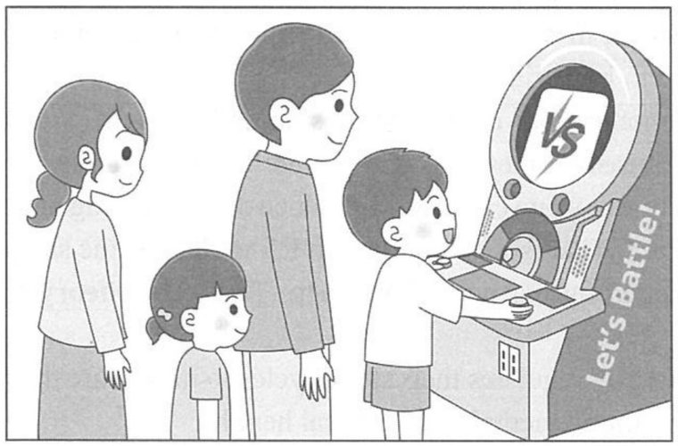
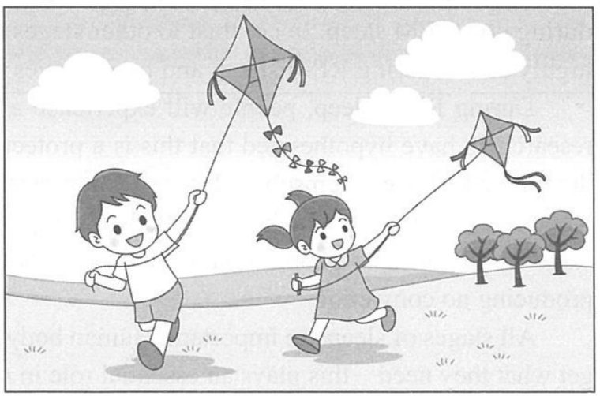

← 回課程首頁
GSAT ENGLISH · DAY 13 · 約 25–30 分鐘
先圈題目，再下筆：
今天開始新單元。前半用點的，後半才打字，打字只有一段和一句翻譯。
今天的路線 （每一段都會自動儲存，被打斷可以回來接著做）
01 / 3 分鐘 / 用點的
一、拆題：拿到題目，先圈
閱卷老師說，最常見的失分是漏掉題目要求的項目 。拿筆把要寫的內容圈起來 。
圈法只有兩步
1 找到「第一段」「第二段」，把後面要你寫的東西圈起來 只圈那個詞，不要整句圈。
2 看到「與、以及、並」，前後分開圈 「原因以及影響」是兩項，要圈兩個。
圈完編上 ①②③。寫完一項，就在圈旁邊打一個勾。
老師示範｜115 學測
……寫一篇英文作文，文分兩段。第一段描述這些圖片中所呈現的現象① ；第二段則根據你自身的經驗或觀察② ，說明此現象的原因③ 以及可能的影響④ 。
第一段 1 項，第二段 3 項。「原因以及 影響」前後各圈一個；「根據經驗或觀察」也是要求，表示第二段要有自己的例子。
換你圈｜今天的題目
點一下就圈起來，再點一下取消。圈完按對答案。
對答案
考試時是真的拿筆在題目卷上圈 ，不是在腦袋裡想。圈完不到 30 秒。
02 / 4 分鐘 / 用點的
二、觀察卡：誰、做什麼、在哪
今天寫這一題的第一段 。看圖，把每一格選出來。兩個選項裡只有一個文法正確。

左圖 
右圖
圖會一直留在上面。點圖放大，再點一下畫面就關掉 。
每張圖看三件事：誰 做什麼 在哪 ；最後看兩張圖 差在哪 。arcade 電子遊樂場 kite 風箏
第一段只寫看得到的 ：誰 、做什麼 、在哪 。
03 / 6 分鐘 / 用點的
三、背四個句構
兩張圖的第一段，就用這四句。紅色粗字 是骨架，要背起來 ；有顏色的底線換成觀察卡的內容。每句小聲唸兩遍。
① 開頭：這兩張圖在講什麼
The two pictures show different scenes of children having fun .
這兩張圖呈現＿＿的不同情景。
pictures 是複數 → show 不加 s。of 後面接「人＋V-ing」。
② 左圖
In the picture on the left, 誰 is / are V-ing 在哪 .
In the picture on the left, a boy is playing a video game at an arcade .
在左邊的圖裡，＿＿正在＿＿。
描述圖裡正在發生的事 → be + V-ing 。一個人用 is ，兩個人以上用 are 。
③ 右圖：對比
In contrast, the right-hand picture shows 誰 V-ing 在哪 .
In contrast, the right-hand picture shows two children flying kites in a park .
相對地，右邊的圖呈現＿＿正在＿＿。
picture 是單數 → shows 要加 s。shows 後面直接接「人＋V-ing」，中間沒有 are 。
④ 收尾：兩張圖差在哪
These two pictures show that some children enjoy V-ing , while others prefer V-ing .
… some children enjoy playing indoors , while others prefer playing outdoors .
這兩張圖顯示，有些＿＿喜歡＿＿，其他人則比較喜歡＿＿。
題目要你寫「差異」，這一句就是在回答它，不能省 。enjoy 後面接 V-ing；some … while others … 是一組。
練習 1｜排出開頭句
這兩張圖呈現孩子們玩樂的不同情景。照順序點。
重排
練習 2｜骨架裡的字
不要往上看，選出骨架裡原本的字。
練習 3｜蓋起來背
看中文，在心裡把整句骨架說出來，再翻開對。老實點「背出來了」或「還沒」。
這四句下一課一開始會考默寫 。今天寫作時先靠記憶寫，真的忘了才點開「句構」。
04 / 9 分鐘 / 打字
四、寫第一段
寫成一段 ，約 50–70 字。下面那一排按鈕（題目、圖片、我的卡、句構）隨時可以點開看，不用往回捲。
題目 圖片 我的卡 句構
以下有兩張不同的兒童娛樂方式的圖片。請就你觀察到的圖片內容及差異，寫一篇英文作文。文分兩段，
第一段說明兩圖片中呈現之娛樂方式的差異 ，第二段則從兩張圖中選出你小時候會偏好的娛樂方式，並說明理由。
今天只寫第一段。
先靠記憶寫，真的忘了才看。
① The two pictures show different scenes of children having fun .
② In the picture on the left, 誰 is / are V-ing 在哪 .
③ In contrast, the right-hand picture shows 誰 V-ing 在哪 .
④ These two pictures show that some children enjoy V-ing , while others prefer V-ing .
②③ 後面可以各加一句自己看到的細節。
0 個英文單字（建議 50–70 字）
這個框關掉了自動修正和自動大寫，和考試手寫一樣，要自己注意。
寫完了，讓系統幫你對
它會看你圈的「差異」有沒有寫到：左圖、右圖、差在哪，各要有一句。
寫完了，對一下
05 / 5 分鐘 / 打字
五、翻譯一句
115 學測中譯英第 1 題。先不看答案寫一次 ，寫完再按鈕看解析。寫不出來的字先用會的字代替，不要空白。
現在越來越多高中英文老師已經增加在課堂上使用英文的百分比。
提示：百分比 percentage · 增加 increase
寫好了，看解析
交給老師
複製我的作答 匯出 TXT
作答只暫存在這個瀏覽器，完成後請複製貼到 LINE。
交出後再看：第一段參考寫法
這不是唯一答案。你加的細節不同也完全可以。
看參考寫法 The two pictures show different scenes of children having fun. In the picture on the left, a boy is playing a video game at an arcade. His family is standing behind him and watching. In contrast, the right-hand picture shows two children flying kites in a park. They are running on the grass and laughing. These two pictures show that some children enjoy playing indoors, while others prefer playing outdoors.